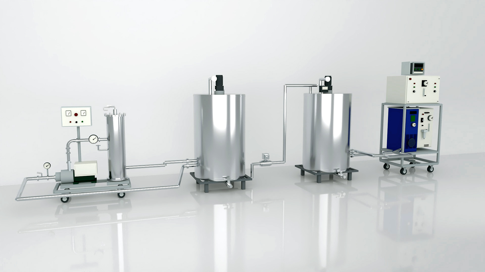
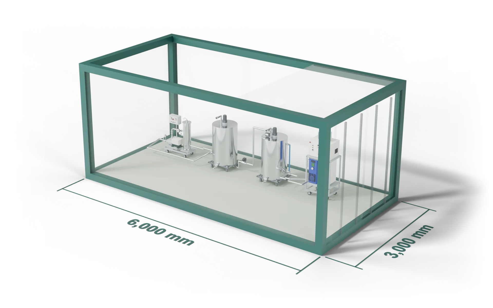
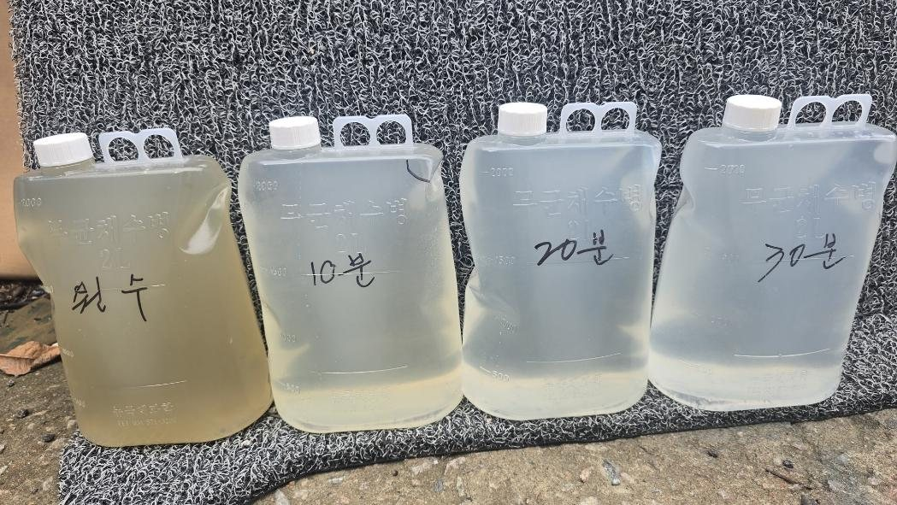
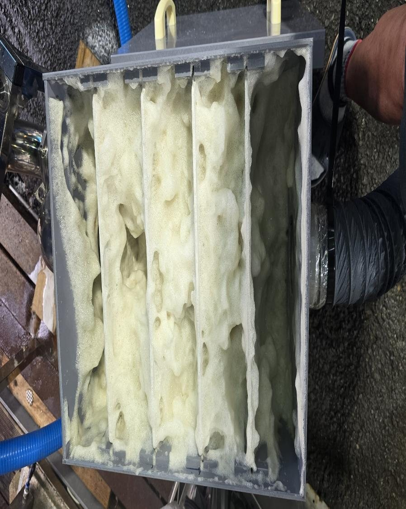
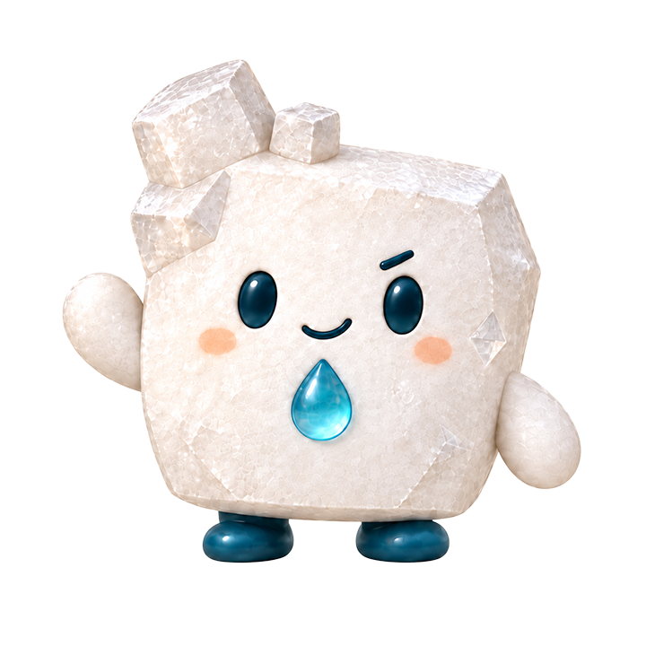
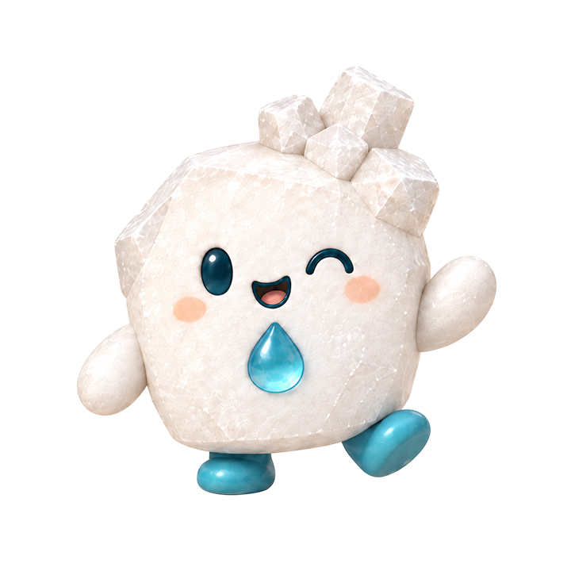

BRINE CARE절임염수 케어
다시 쓰는 기술을,
매일의 공정으로.
염수의 상태와 운영 조건에 맞춰
재활용 공정과 설비 구성을 검토합니다.

설비 시각화 · 실제 사양은 현장별 협의↗
현장의 질문에
기술과 실무로 답합니다.
01 / OUR SOLUTIONS
도입을 검토하는 순간부터 운영 중의 고민까지.
와텍의 두 가지 케어가 함께합니다.
염수의 상태와 운영 조건에 맞춰
재활용 공정과 설비 구성을 검토합니다.

상황 정리와 서류 작성부터
원인 확인, 필요한 기술적 조치까지.
3×6m 컨테이너 배치 구상
외부 저장조 별도 · 확정 설치도 아님

02 / THE REUSE PROCESS
분리부터 품질 확인까지.
현장 조건에 맞는 재사용의 흐름을 설계합니다.
생산 품목과 하루 염수 사용량, 수질과 기존 공정을 살핍니다. 현장마다 다른 조건을 확인하는 것이 첫 단계입니다.
생산 품목 · 사용량 · 원수 상태기술의 흐름 자세히 보기
버블·부상분리를 이용해 오염물을 떠오르게 하고, 다단 챔버에서 걷어내는 구성을 검토합니다.
버블 발생 · 부상분리 · 다단 챔버기술의 흐름 자세히 보기
후단 오존 처리, 계측과 염도 보정 등 현장에 필요한 범위를 정합니다. 분리와 후단 처리를 하나의 흐름으로 연결합니다.
후단 처리 · 계측 · 염도 보정기술의 흐름 자세히 보기염도·탁도·냄새·pH·미생물·잔류오존 등 필요한 기준을 확인하고 재사용 여부를 판단합니다. 운전 기록과 관리도 함께 살핍니다.
품질 기준 · 재사용 판단 · 운전 기록기술의 흐름 자세히 보기재사용 적합성은 실제 염수 상태와 현장의 품질 기준에 따라 확인합니다.
03 / CHECK YOUR NUMBERS
하루 염수량을 선택해
설비 도입과 예상 경제성을 먼저 살펴보세요.
2024년 농식품부 공개 자료의 원가와
와텍의 설비 가격·감소율 가정을 적용합니다.
하루 염수 사용량
성수기 1배 · 부가세 별도 · 정부 지원금 미반영
소금비 54%, 폐수·용수비 90% 감소 가정. 확정 견적·절감 보장이 아닙니다.
배관과 전원, 반입·정비 동선, 기존 탱크와의 연결 조건을 살펴봅니다. 3×6m 컨테이너 배치는 시각화 가정이며, 실제 설치 범위는 현장 확인 후 정합니다.
와텍은 공고 확인과 신청 서류 준비를 지원합니다. 안내된 국비 30%·지방비 40%·자부담 30%는 2024년 자료이며, 현재 신청 자격과 지원 비율은 해당 연도 시군 공고에서 확인해야 합니다.
생산 품목, 하루 염수 사용량, 기존 설비 사진, 현재 불편한 점부터 준비해 주세요. 아직 모르는 내용이 있어도 확인된 정보부터 정리할 수 있습니다.
공개 원가 자료와 설비 가격·감소율 가정을 적용한 참고 시뮬레이션입니다. 실제 가동일, 단가, 염수 상태와 운영 방식에 따라 달라집니다. 전체 계산기에서 실제 지출을 입력해 비교할 수 있습니다.


SMALL THINGS, NEXT POSSIBILITIES
꼼꼼한 소금이와 호기심 많은 소그미.
와텍의 자원 순환 가치를 담은 두 친구를 만나보세요.
LET’S FIND YOUR NEXT FLOW
확인된 내용부터 편하게 정리해 주세요.